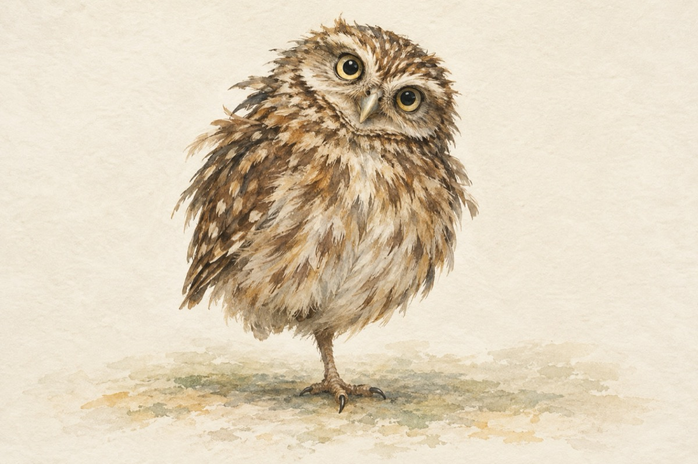
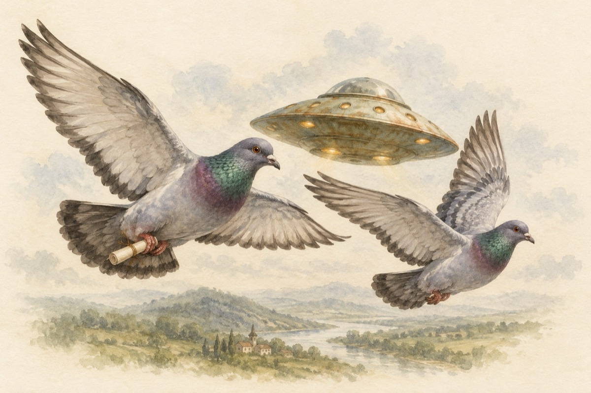
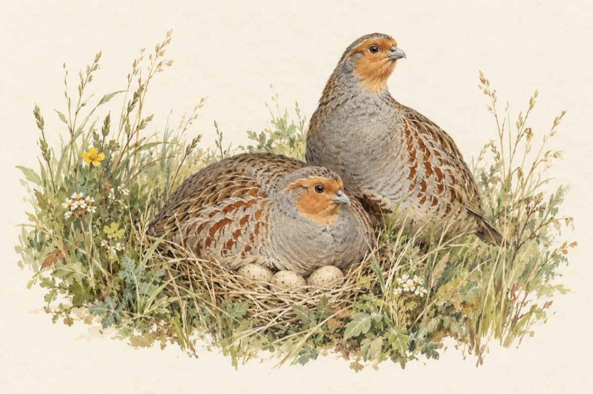
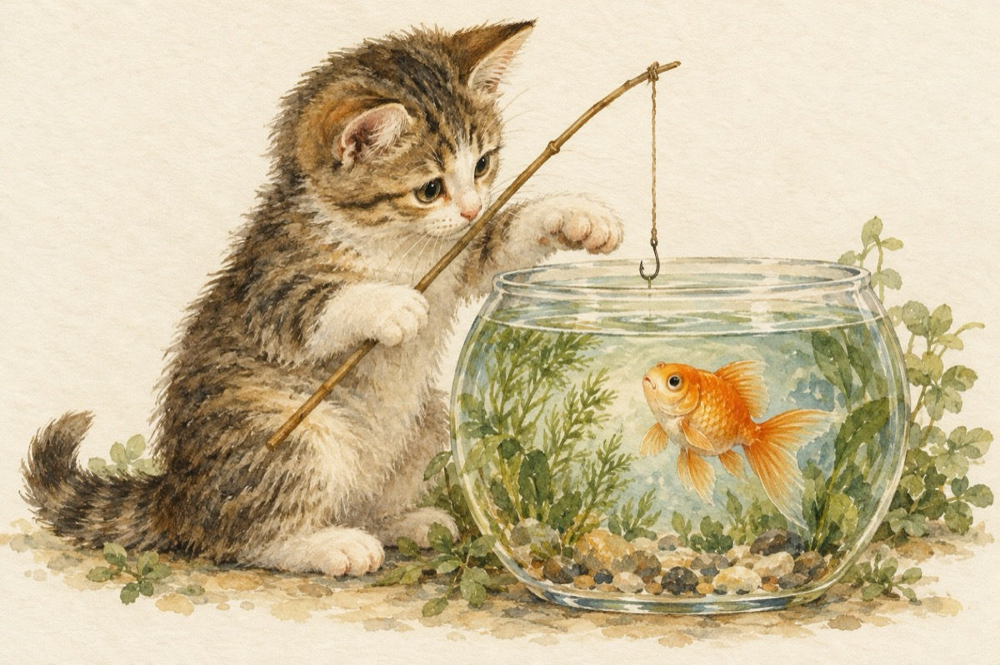
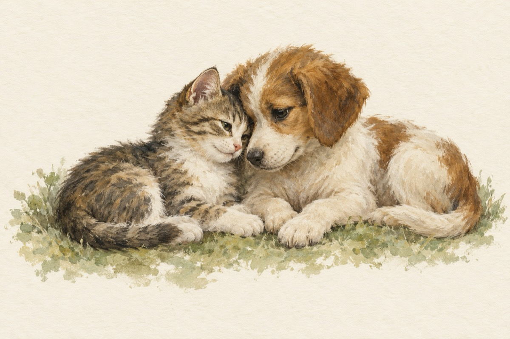
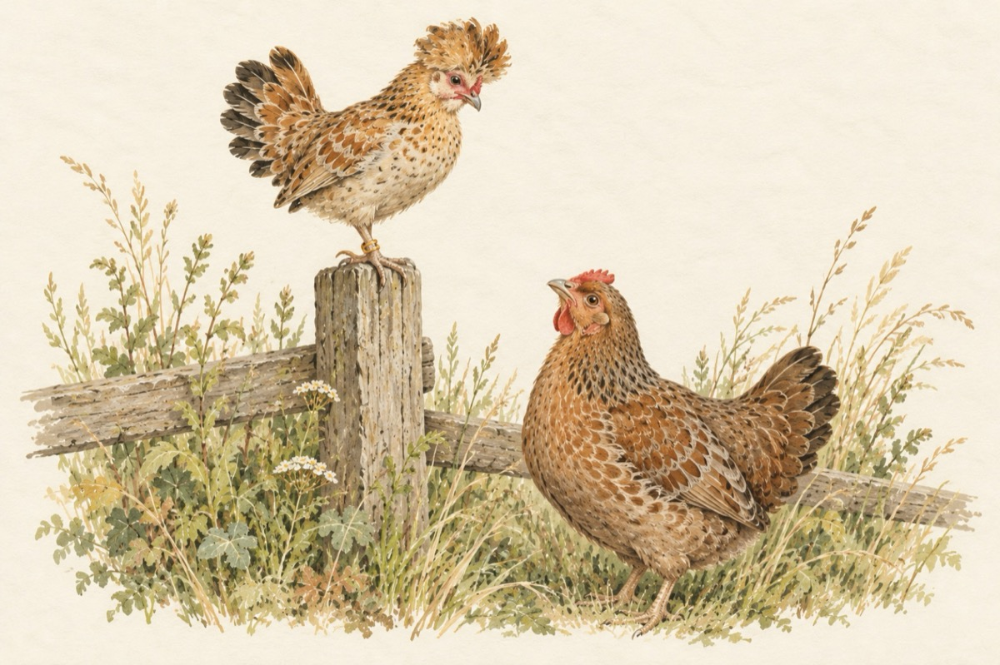
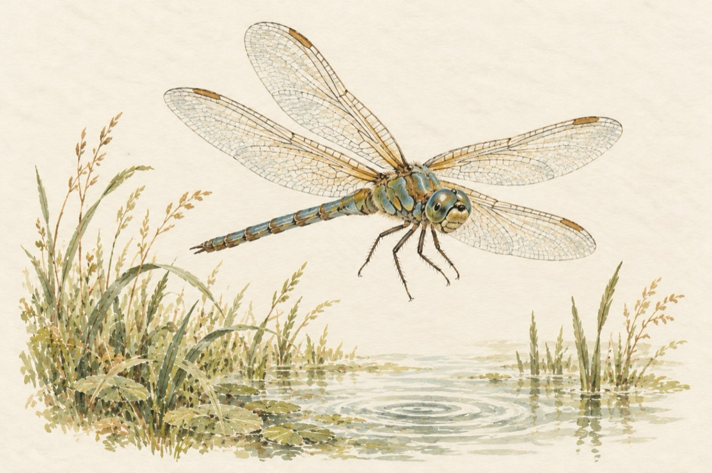
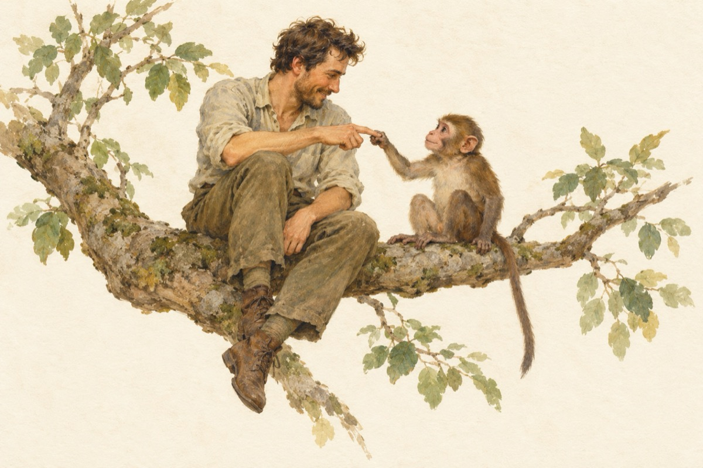
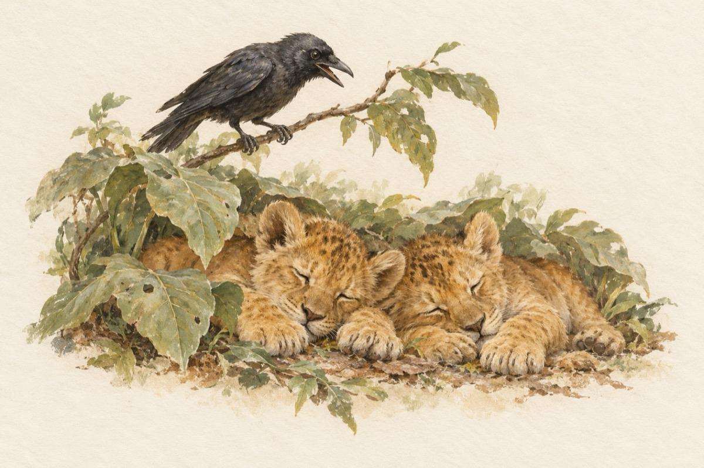
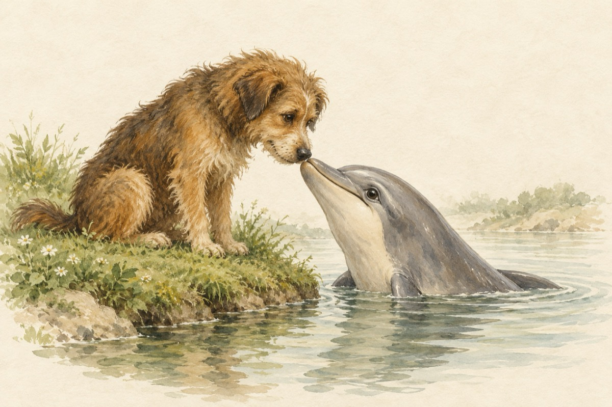

sala animalelor
Arca lui Noe
Poezii cu animale
Culegere tematică, adunată din poeziile apărute în 2015 pe pagina de Facebook „O poezie pe zi”, în capitole despre păsări, pisici, câini, animale de ogradă, pădure și altele. Aici sunt păstrate numai poeziile care nu apar în alte cărți.
2015 · 12 texte
Deschide cartea la prima poezie →
Păstreaz-o: PDF, de tipărit (1.0 MB) · EPUB, pentru cititoare (0.8 MB)

Ce să fie?
Porumbeii voiajori
E o specie anume
Pisicuța pescărița
Idila
Povață Îndrăgostiții măgăruși
Îndrăgostiții măgăruși
Libelula colorată
Cuprins
- Frumoasele păsărele
- Ce să fie?
- Porumbeii voiajori
- E o specie anume
- Grațioase pisicuțe
- Pisicuța pescărița
- Idila
- Promenadă prin ogradă
- Povață
- Îndrăgostiții măgăruși
- Minunatul insectar
- Libelula colorată
- Jucăușe maimuțele

Evoluție- Regele animalelor și alte feline

Învățătură de minte- Hai-hui prin ape

Delfinul înamorat- Niște pinguini
 Pinguinii
Pinguinii